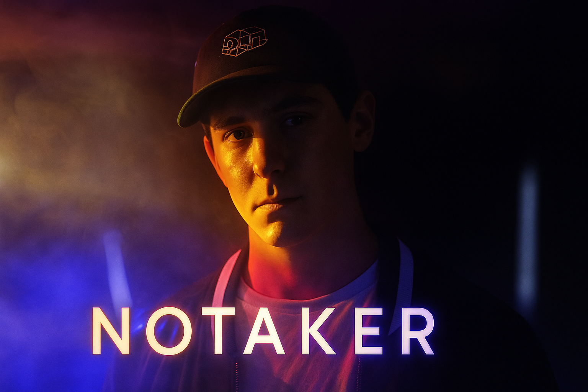
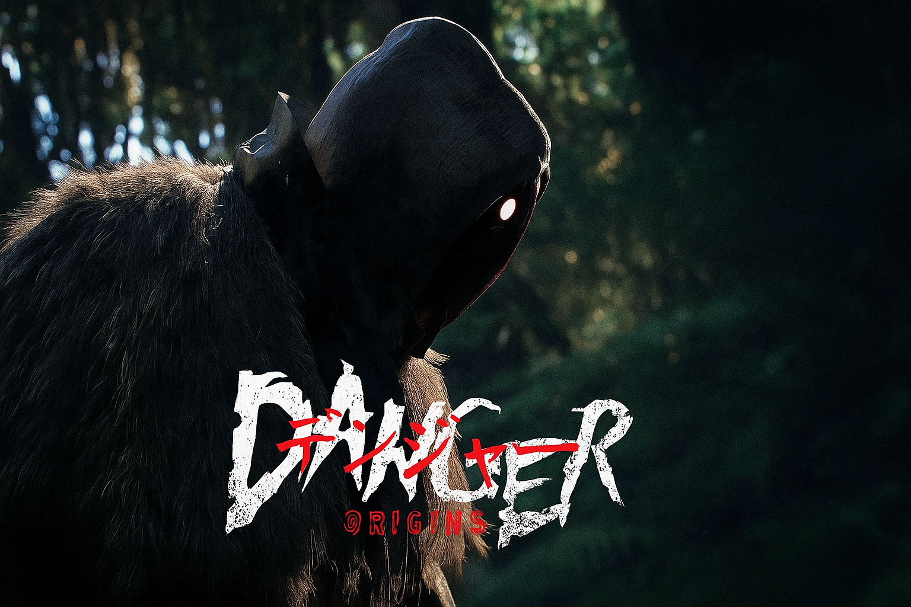
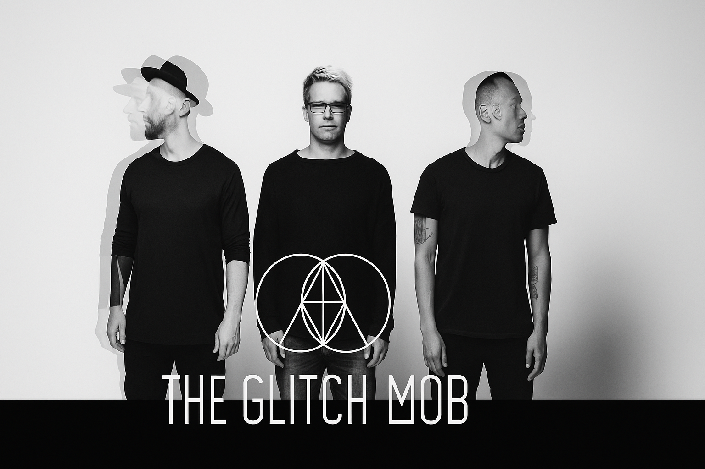

Notaker
David Nothaker (born September 23, 1989), known professionally as Notaker, is an American DJ and producer from St. Louis, Missouri. He’s renowned for his midtempo-progressive electronic sound and breakthrough singles such as “Infinite”, “Shimmer”, and “The Storm”, which garnered millions of Spotify streams.
Since launching his career in 2015, he’s released several EPs—including Genesis (2017), Erebus I (2018), and Path.Finder (2019)—on respected labels like Monstercat, Mau5trap, and Armada.
Notably, he caught the spotlight as one of Dancing Astronaut’s 25 Artists to Watch in 2017 and has graced stages at major U.S. festivals such as Global Dance Festival and Freaky Deaky.
Danger
Danger, whose real name is Franck Rivoire (born March 21, 1984), is a French electronic musician hailing from Lyon. He creates a unique blend of electronic, trip hop, electro house, synthwave, French house, and even witch house genres.
Having started around 2007, he began releasing dated-title EPs (like 09/14 2007) on Ekler'o'shock and later his self-designed label 1789. His music often features intriguing time-themed track names such as “11h30” and “88:88”, and he’s known for wearing a black mask during live performances to distinguish his stage persona from his shy off-stage self.
He's also contributed game soundtracks—Haven (2020) and Windblown (released on Steam in October 2024, streaming in December 2024).
The Glitch Mob
The Glitch Mob is an American electronic music duo from Los Angeles, currently consisting of edIT (Edward Ma) and Ooah (Josh Mayer). Previously, Boreta (Justin Boreta) was a member until his departure in September 2023; earlier, founding member Kraddy left in 2009.
Emerging from the L.A. beat scene, they gained recognition for their dynamic live shows (featuring laptops and MIDI controllers) and creative stage elements like “The Blade”.
Their debut album Drink the Sea (2010) earned them national attention, while their second studio album Love Death Immortality (2014) debuted at #1 on Billboard’s Dance/Electronic Albums chart and peaked at #13 on the Billboard 200.
They continued to release albums such as See Without Eyes (2018) and Ctrl Alt Reality (2022), and their music has featured prominently in media—Warrior Concerto appeared in a video game trailer, Seven Nation Army remix featured in film and game promos, and Skullclub was used in an Amazon Echo ad.